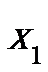
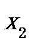
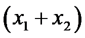
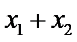
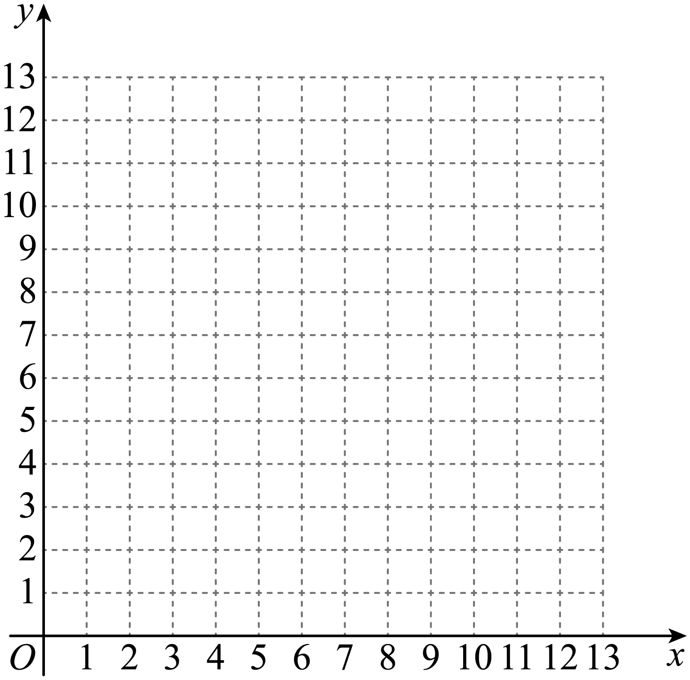
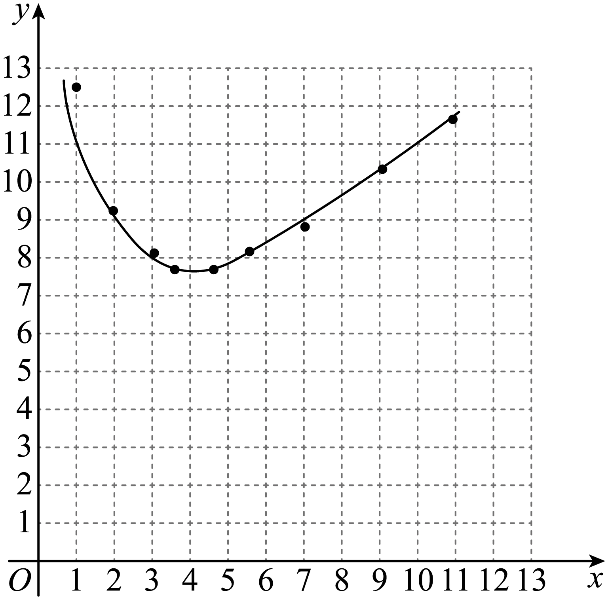
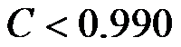

2023年北京中考数学 第25题 解析
25. 某小组研究了清洗某种含污物品的节约用水策略．部分内容如下．
每次清洗1个单位质量的该种含污物品，清洗前的清洁度均为0.800要求清洗后的清洁度为0.990
方案一：采用一次清洗的方式．
结果：当用水量为19个单位质量时，清洗后测得的清洁度为0.990．
方案二：采用两次清洗的方式．
记第一次用水量为

个单位质量，第二次用水量为
个单位质量，总用水量为
个单位质量，两次清洗后测得的清洁度为C．记录的部分实验数据如下： | 11.0 | 9.0 | 9.0 | 7.0 | 5.5 | 4.5 | 3.5 | 3.0 | 3.0 | 2.0 | 1.0 |
| 0.8 | 1.0 | 1.3 | 1.9 | 2.6 | 3.2 | 4.3 | 4 0 0 | 5.0 | 7.1 | 11.5 |
 | 11.8 | 10.0 | 10.3 | 8.9 | 8.1 | 7.7 | 7.8 | 7.0 | 8.0 | 9.1 | 12.5 |
C | 0.990 | 0.989 | 0.990 | 0.990 | 0.990 | 0.990 | 0.990 | 0.988 | 0.990 | 0.990 | 0.990 |
对以上实验数据进行分析，补充完成以下内容．
（Ⅰ）选出C是0.990的所有数据组，并划“√”；
（Ⅱ）通过分析（Ⅰ）中选出的数据，发现可以用函数刻画第一次用水量和总用水量之间的关系，在平面直角坐标系 中画出此函数的图象；
中画出此函数的图象；

结果：结合实验数据，利用所画的函数图象可以推断，当第一次用水量约为______个单位质量（精确到个位）时，总用水量最小．
根据以上实验数据和结果，解决下列问题：
（1）当采用两次清洗的方式并使总用水量最小时，与采用一次清洗的方式相比、可节水约______个单位质量（结果保留小数点后一位）；
（2）当采用两次清洗的方式时，若第一次用水量为6个单位质量，总用水量为7.5个单位质量，则清洗后的清洁度C______0.990（填“>”“=”或“<”）．
【答案】（Ⅰ）见解析；（Ⅱ）见解析，4；（1）11.3；（2）<
【解析】
【分析】（Ⅰ）直接在表格中标记即可；
（Ⅱ）根据表格中数据描点连线即可做出函数图象，再结合函数图象找到最低点，可得第一次用水量约为4个单位质量时，总用水量最小；
（1）根据表格可得，用两次清洗的方式并使总用水量最小时，用水量为7.7个单位质量，计算即可；
（2）根据表格可得当第一次用水量为6个单位质量，总用水量超过8个单位质量，则清洗后的清洁度能达到0.990，若总用水量为7.5个单位质量，则清洁度达不到0.990．
【详解】（Ⅰ）表格如下：
| 11.0 | 9.0 | 9.0 | 7.0 | 5.5 | 4.5 | 3.5 | 3.0 | 3.0 | 2.0 | 1.0 |
| 0.8 | 1.0 | 1.3 | 1.9 | 2.6 | 3.2 | 4.3 | 4.0 | 5.0 | 7.1 | 11.5 |
| 11.8 | 10.0 | 10.3 | 8.9 | 8.1 | 7.7 | 7.8 | 7.0 | 8.0 | 9.1 | 12.5 |
C | 0.990 √ | 0.989 | 0.990 √ | 0.990 √ | 0.990 √ | 0.990 √ | 0.990 √ | 0.988 | 0.990 √ | 0.990 √ | 0.990 √ |
（Ⅱ）函数图象如下：

由图象可得，当第一次用水量约为4个单位质量（精确到个位）时，总用水量最小；
（1）当采用两次清洗的方式并使总用水量最小时，用水量为7.7个单位质量，
19-7.7=11.3，
即可节水约11.3个单位质量；
（2）由图可得，当第一次用水量为6个单位质量，总用水量超过8个单位质量，则清洗后的清洁度能达到0.990，
第一次用水量为6个单位质量，总用水量为7.5个单位质量，则清洗后的清洁度

，故答案为：<．
【点睛】本题考查了函数图象，根据数据描绘函数图象、从函数图象获取信息是解题的关键．